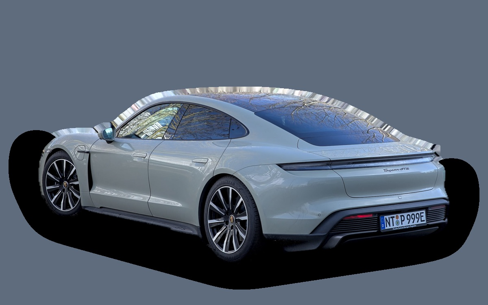
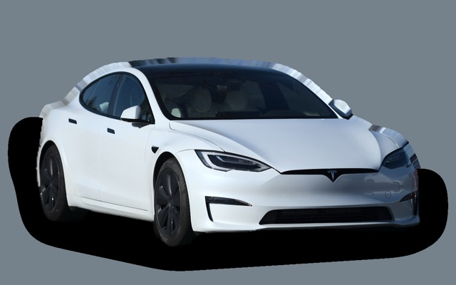

What does a Porsche Taycan cost per month?
A 2023 Porsche Taycan costs about SEK 6,452 a month, all in.
SEK 6,452per month, 2023 model
SEK 736,000price, 2023 model
SEK 1,240,000new from
Cvalue grade (2023)


Monthly cost by model year
| Model year | Version in the calculation | Price | Per month | Grade |
|---|---|---|---|---|
| 2026 | Taycan RWD 408, Standard | SEK 1,240,000 | SEK 14,143 | E |
| 2023 | Taycan RWD 408, Standard | SEK 736,000 | SEK 6,452 | C |
| 2020 | Taycan 4S 598, Standard | SEK 639,000 | SEK 6,234 | C |
Based on 5 years of ownership and 12,500 km a year, with fuel prices from 2026-10-22. The monthly cost includes depreciation, fuel, servicing and repairs, insurance and road tax.
How the cost splits for a 2023 car
- Depreciation: SEK 3,850/mo
- Fuel: SEK 490/mo
- Servicing and repairs: SEK 543/mo
- Insurance: SEK 1,538/mo
- Road tax: SEK 30/mo
Used prices in ads
| Model year | Median price | Ads | Typical mileage |
|---|---|---|---|
| 2025 | SEK 1,072,000 | 20 | 20,000 km |
| 2024 | SEK 779,000 | 11 | 43,000 km |
| 2023 | SEK 824,000 | 24 | 50,000 km |
| 2022 | SEK 660,000 | 35 | 65,000 km |
| 2021 | SEK 739,400 | 16 | 70,000 km |
| 2020 | SEK 769,900 | 10 | 82,000 km |
The median price in Swedish ads by model year in October 2026 (source: Blocket, BilKoll). Ad prices are asking prices, and the final price may be lower.
Engines and versions
| Engine | Fuel | Power | 0–100 km/h | Consumption (WLTP) | Range | Model years | Extra cost |
|---|---|---|---|---|---|---|---|
| Taycan RWD 408 | Electric | 408 hp | 4.8 s | 19 kWh/100 km | 590 km | 2021– | – |
| Taycan 4S 598 | Electric | 598 hp | 3.7 s | 20 kWh/100 km | 550 km | 2020– | +SEK 190,200 |
| Taycan Turbo 884 | Electric | 884 hp | 2.7 s | 20.5 kWh/100 km | 560 km | 2020– | +SEK 810,200 |
- Trim: Standard, Sport Chrono (+SEK 60,000)
Facts
- Body
- Sedan
- Model years
- 2020–
- New from
- SEK 1,240,000
- Boot
- 407 litres
- Euro NCAP
- not tested
- New-car warranty
- 3 years
- Reliability
- 3 of 5
- Comprehensive insurance, estimate
- SEK 22,900/yr
- Servicing, estimate
- SEK 4,200/yr
Common faults to watch for
- Air suspension (bellows, compressor), repair about SEK 10,000
The faults apply to some engines and model years. The calculator works out the risk for the exact version you choose.
Pros and cons
Pro
Fantastic handling and very fast charging.
Con
Very expensive and loses a lot of value.
Similar cars

Tesla Model SSEK 6,768/mo as a 2023 model Volkswagen ID.7SEK 6,855/mo as a 2026 model
Volkswagen ID.7SEK 6,855/mo as a 2026 model Mercedes-Benz C-ClassSEK 5,460/mo as a 2023 model
Mercedes-Benz C-ClassSEK 5,460/mo as a 2023 model Audi A5 SportbackSEK 5,243/mo as a 2021 model
Audi A5 SportbackSEK 5,243/mo as a 2021 model BMW 3 SeriesSEK 4,611/mo as a 2023 model
BMW 3 SeriesSEK 4,611/mo as a 2023 model BMW 5 Series / i5SEK 8,394/mo as a 2026 model
BMW 5 Series / i5SEK 8,394/mo as a 2026 model
Updated 2026-10-29 · ad data Oct 2026